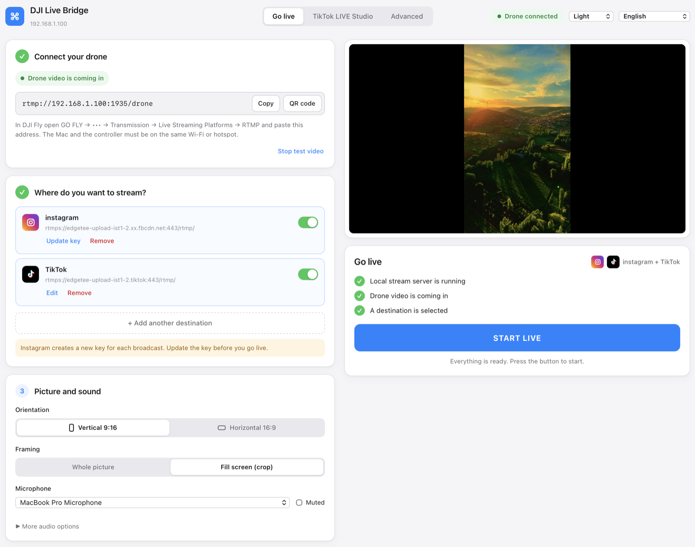
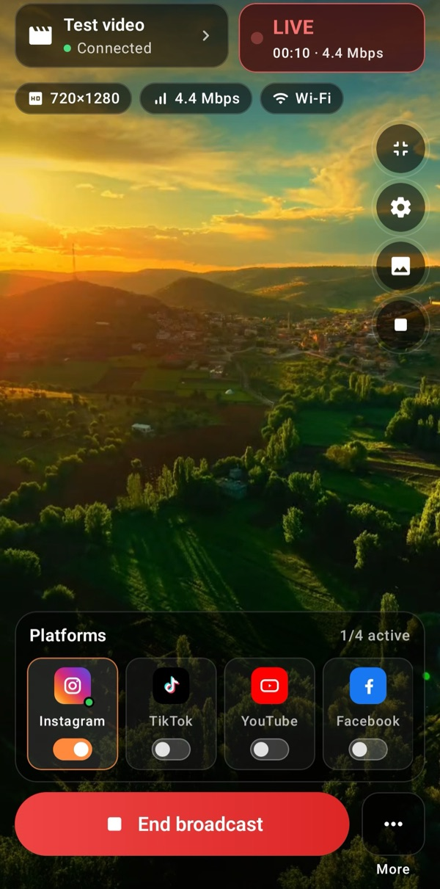
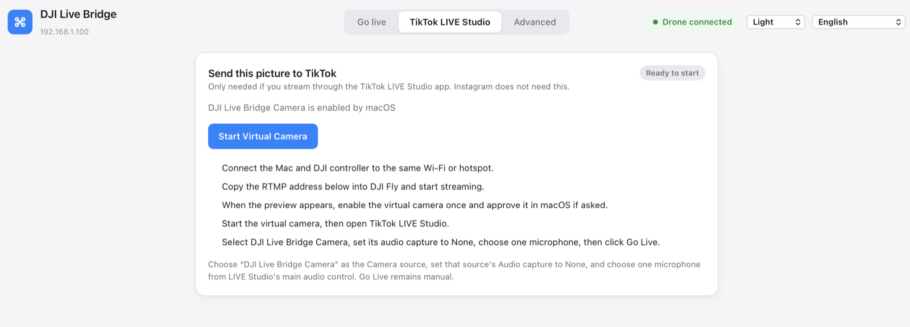
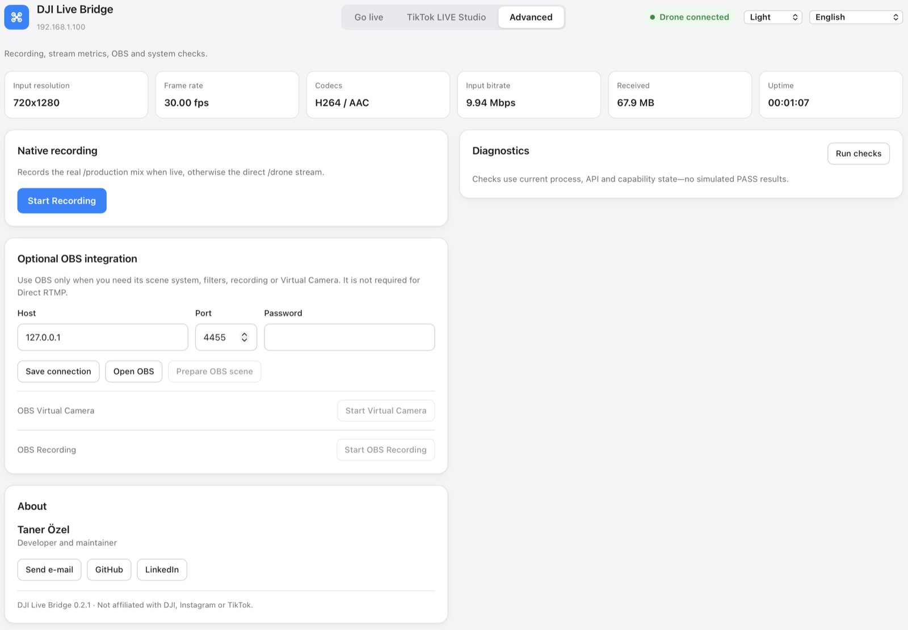

Drone ile sosyal medyada canlı yayın yapın
DJI Fly'daki RTMP yayınını bilgisayarınıza gönderin; DJI Live Bridge onu Instagram, TikTok, YouTube, Facebook ve diğer platformlara aynı anda iletir. TikTok için yayın anahtarı gerekmeyen sanal kamera da var.

Tek ekran: drone'u bağlayın, hedef ekleyin, YAYINI BAŞLAT'a basın.
Neler yapar
Her şey kendi bilgisayarınızda çalışır. Drone görüntüsü başkasının sunucusundan geçmez.
Aynı anda birden fazla platform
Instagram, TikTok ve istediğiniz özel RTMP hedefi tek yayında. Görüntü bir kez kodlanır ve her hedefe ayrı ayrı iletilir; bir hedef düşerse diğerleri durmaz.
Hayvanları bulur ve sayar
AI Vision drone görüntüsündeki keçi, koyun, sığır, at, eşek ve kümes hayvanlarını bulur, her birini yayında etiketli bir kutuyla işaretler ve sayar. Bilgisayarınızda çalışır; hiçbir görüntü yüklenmez.
TikTok için yayın anahtarı gerekmez
Yerleşik sanal kamera TikTok LIVE Studio'da “DJI Live Bridge Camera” olarak görünür, böylece RTMP erişimi olmadan canlı yayın yapabilirsiniz.
Dikey video için yapıldı
30 fps'de 1080×1920, 6 Mbps CBR, H.264 High, 2 saniyelik anahtar kareler. Boş alan siyah şeritler yerine görüntünün bulanık bir kopyasıyla doldurulur.
Başka hiçbir şey kurmanız gerekmez
FFmpeg uygulamanın içinde gelir — Homebrew yok, Terminal yok, ayrı indirme yok. macOS paketi Apple tarafından imzalanmış ve onaylanmıştır.
Anahtarlar sistem kasasında kalır
Her yayın anahtarı kendi Anahtar Zinciri kaydında durur; yapılandırma dosyasında, işlem argümanlarında veya günlüklerde asla yer almaz.
Canlı önizleme ve tanılama
Düşük gecikmeli yerel önizleme, medya sunucusundan gelen gerçek yayın ölçümleri, kayıt ve asla sahte başarılı sonuç üretmeyen sistem kontrolleri.
15 dil, 5 tema
Arayüz sistem dilinizi izler; Arapça'da ise tüm düzen sağdan sola döner.
Osmo kameralarla da
Osmo Action, Osmo Pocket ve Osmo 360 kameralar, tıpkı DJI Fly'daki bir drone gibi DJI Mimo'dan RTMP ile uygulamaya yayın yapar.
Nasıl çalışır
DJI Fly bilgisayarınıza RTMP gönderir; gerisini bilgisayar halleder.
- Drone'u bağlayınDJI Fly'da: GO FLY → Aktarım → Canlı Yayın Platformları → RTMP yolunu açın ve uygulamanın gösterdiği adresi yapıştırın. Bilgisayar ile kumanda aynı Wi-Fi ağında veya aynı telefon hotspot'unda olmalı.
- Nereye yayın yapacağınızı seçinInstagram, TikTok ya da herhangi bir RTMP sunucusunu, o platformdan aldığınız sunucu URL'si ve yayın anahtarıyla ekleyin. Anahtarlar sistem kasasında saklanır.
- YAYINI BAŞLAT'a basınDüğme, yerel sunucu çalışırken, drone görüntüsü gelirken ve bir hedef seçiliyken açılır. Ardından geçen süreyi, her hedefin durumunu ve gönderilen veriyi görürsünüz.
Android uygulamasıyla telefondan yayın yapın
Sahada bilgisayar yok mu? Stream My Drone, uygulamanın Android sürümü: telefonunuz DJI Fly'ın yayınını alır ve doğrudan platformlarınıza gönderir.
- Aynı anda birden çok platform: Instagram, TikTok, YouTube, Facebook, Twitch, Kick ve dilediğiniz RTMP veya RTMPS sunucusu.
- Yayına çıkmadan önce drone görüntüsünün canlı önizlemesi; çözünürlük, bit hızı ve bağlantı bilgileriyle.
- Kısa bir ağ kesintisinden sonra hedef kendi kendine yeniden bağlanır; başka bir uygulamaya geçtiğinizde yayın devam eder.
- Aynı Wi-Fi ağında ya da telefonun kendi hotspot'u üzerinden çalışır. Yayın anahtarları Android Keystore ile şifrelenir.
Google Play'de tek seferlik satın alma, abonelik yok. Android 9 veya üzeri. Telefon görüntüyü DJI Fly'ın gönderdiği gibi iletir; sanal kamera ve dikey 1080×1920 dönüştürme masaüstü uygulamasına özeldir.

Yayın anahtarı olmadan TikTok
TikTok RTMP anahtarlarını yalnızca bazı hesaplara veriyor. TikTok LIVE Studio'da böyle bir sınır yok, çünkü kendi hesabınızla giriş yapıyorsunuz — tek ihtiyacı bir kamera. DJI Live Bridge o kamerayı sağlıyor.
- Sanal kamerayı bir kez etkinleştirin; sistem ilk seferde izin ister.
- TikTok LIVE Studio'da bir Kamera kaynağı ekleyip DJI Live Bridge Camera'yı seçin.
- Bu kaynağın ses yakalamasını None yapın ve LIVE Studio'da tek bir mikrofon seçin.
- TikTok LIVE Studio'da Go Live'a basın.
Kamera bilerek yalnızca görüntü taşır: böylece sesi TikTok'un kendi işleyişi yönetir ve çift ses oluşmaz.

Ayrıntıya girmek isteyenlere
Kayıt, canlı yayın ölçümleri, isteğe bağlı OBS entegrasyonu ve sistem kontrolleri, ana akışı meşgul etmeden Gelişmiş sekmesinde durur.

Kurulum
- DMG'yi indirinApple Silicon Mac (M1 ve sonrası) için
aarch64, Intel Mac içinx86_64dosyasını alın, sonra DJI Live Bridge'i Uygulamalar klasörüne sürükleyin — sanal kamera yalnızca oradan çalışır. Windows'ta-setup.exekurulum dosyasını çalıştırın. - AçınKurulumun tamamı bu kadar. FFmpeg uygulamanın içinde gelir; Homebrew, Terminal ya da ikinci bir indirme yok.
- Yayına başlayınmacOS uygulaması Apple tarafından imzalanıp onaylandığı için uyarı vermeden açılır.
Uygulama 15 dil konuşuyor
Sorular
Hangi drone'lar çalışır?
DJI Fly sürümünde Canlı Yayın Platformları altında RTMP sunan her drone. Uygulama normal bir RTMP yayını aldığı için drone'un kendisiyle konuşmaz. RC 2'de, kumandaya bir mikrofon bağlı değilse DJI Fly yayını başlatmayı reddedebilir.
FFmpeg kurmam gerekir mi?
Hayır. Uygulama kendi FFmpeg'ini taşır; kaynaktan, hiçbir GPL bileşeni olmadan derlenmiştir (LGPL, H.264 için Apple VideoToolbox). Yani kuracak bir şey ve güncel tutacak bir şey yok. Lisans metinleri ve derleme bayraklarının tamamı uygulamanın içinde Contents/Resources/licenses altında.
OBS gerekir mi?
Hayır. OBS isteğe bağlıdır ve yalnızca sahnelerini, filtrelerini veya kaydını istiyorsanız işe yarar. Doğrudan RTMP ve sanal kamera OBS olmadan çalışır.
Intel Mac'te çalışır mı?
Evet. Her sürüm iki indirmeyle gelir: biri Apple Silicon, biri Intel için; ikisi de imzalı ve onaylı, her biri kendi paketlenmiş FFmpeg'iyle. Mac'inize uyan dosyayı seçin.
Windows'ta çalışır mı?
Beta aşamasında bir Windows sürümü var. Instagram, TikTok ve istediğiniz RTMP hedefine yayın çalışıyor; önizleme, kayıt ve tanılama da öyle. Yerleşik sanal kamera da dahil: kurulum dosyası, TikTok LIVE Studio, OBS ya da Zoom için bir “DJI Live Bridge Camera” cihazı kaydeder. macOS'takinden daha yeni olduğu için görünmezse, isteğe bağlı OBS entegrasyonu üzerinden OBS Virtual Camera hâlâ çalışır. Bir uyarı daha: kurulum dosyası henüz imzalı değil, bu yüzden Windows SmartScreen sizi uyaracak.
Hayvanları tespit edip sayabilir mi?
Evet. Canlı yayın sekmesinde AI Vision'ı açın: her hayvan yayında ve sanal kamerada etiketli bir kutu alır, bir sayaç da sayar. Her şey bilgisayarınızda çalışır. Keçi, eşek ve kümes hayvanları için Mac gerekir; Windows'ta koyun, inek, at, köpek, kedi, kuş ve ayı tanınır.
Yayın anahtarlarım nereye gidiyor?
Sistem kasasına, her hedef için ayrı bir kayda. Yayına başladığınızda loopback arayüzü üzerinden yerel medya sunucusuna verilir, durdurduğunuzda silinir. Yapılandırma dosyasında, işlem argümanlarında veya günlüklerde asla görünmezler.
Instagram neden her seferinde yeni anahtar istiyor?
Bu Instagram'ın kendi davranışı: her yayın için yeni bir yayın anahtarı üretiyor. Yayına başlamadan önce hedef kartındaki “Anahtarı güncelle”yi kullanın ve yayını herkese açmak için Instagram tarafında “Canlı yayına geç”e basmayı unutmayın.
Görüntüm neden 720p?
DJI kumandası RTMP üzerinden çoğu zaman 720p gönderir. Uygulama gerçek giriş çözünürlüğünü gösterir ve büyütülmüş çıktıyı gerçek 1080p gibi sunmaz.
Rehberler
Her platform için adım adım anlatım.
DJI drone'unuzla hayvanları canlı bulun ve sayın
DJI Live Bridge, drone'unuzun canlı görüntüsündeki keçi, koyun, inek, at, eşek ve kümes hayvanlarını bulur, yayında işaretler ve sayar. Hepsi kendi bilgisayarınızda.
DJI Fly RTMP canlı yayın ayarları: eksiksiz kurulum
DJI Fly RTMP canlı yayın ayarları: ayar nerede, hangi adres girilir, kumanda ve bilgisayar aynı ağa nasıl bağlanır ve sorunlar nasıl çözülür.
DJI Fly neden Instagram'a canlı yayın yapamıyor? (ve çözümü)
DJI Fly'da Instagram seçeneği yok ve RTMP istemcisi Instagram'ın istediği şifreli RTMPS'i yapamıyor. Nedeni ve DJI drone ile Instagram'da yine de nasıl canlı yayın yapılır.
Drone'unuzu bilgisayarınızın harici kamerası yapın
DJI Live Bridge sanal kamerasıyla DJI drone'unuzu TikTok LIVE Studio, OBS, Zoom, Google Meet ve Teams için webcam olarak kullanın. Kurulum, fikirler ve çözümler.
DJI Mini 4 Pro ile canlı yayın nasıl yapılır?
DJI Mini 4 Pro ile DJI RC 2 veya RC-N2 kumandayla canlı yayın: DJI Fly'da RTMP, mikrofon şartı, 720p sınırı ve Instagram, TikTok, YouTube'a yayın.
DJI Neo ile canlı yayın nasıl yapılır?
DJI Neo ile canlı yayın: hangi kontrol modu çalışır (telefon, RC-N3, gözlük), DJI Fly'da RTMP ve DJI Live Bridge ile Instagram, TikTok veya YouTube'da yayın.
DJI Avata 2 ile canlı yayın nasıl yapılır?
DJI Avata 2 ile FPV canlı yayın: Goggles 3 görüntüsünü telefondaki DJI Fly'a aktarın, RTMP ile yayınlayın ve Instagram, TikTok veya YouTube'da canlıya çıkın.
DJI Osmo kameranızla Instagram, TikTok ve daha fazlasında canlı yayın
DJI Mimo, Osmo Action, Osmo Pocket ve Osmo 360 kameralarla RTMP yayını yapabilir. Bunu DJI Live Bridge'e gönderin, aynı anda Instagram, TikTok ve YouTube'da canlı yayına çıkın.
Osmo Pocket 3 ile Instagram ve TikTok'ta canlı yayın nasıl yapılır?
DJI Osmo Pocket 3 ile DJI Mimo'dan RTMP yayınını DJI Live Bridge ile aynı anda Instagram, TikTok ve YouTube'a gönderin ve kamerayı kablosuz webcam olarak kullanın.
Osmo Action kamerayla Instagram ve TikTok'ta canlı yayın nasıl yapılır?
DJI Osmo Action 6, 5 Pro, 4 veya 3 ile DJI Mimo'dan RTMP yayınını DJI Live Bridge ile aynı anda Instagram, TikTok, YouTube ve Twitch'e gönderin. Kurulum ve ayarlar.
DJI drone ile TikTok'ta canlı yayın nasıl yapılır
Drone ile TikTok'ta canlı yayın: DJI Fly'dan TikTok yayın anahtarıyla ya da anahtarsız, TikTok LIVE Studio ve sanal kamerayla. Ayarlar ve çözümler.
Drone ile Instagram'da canlı yayın nasıl yapılır?
Drone ile Instagram'da canlı yayın: instagram.com'dan yayın URL'si ve anahtarını alın, DJI Fly'ın RTMP yayınını DJI Live Bridge ile gönderin, Go live'a basın.
Drone ile YouTube'da canlı yayın nasıl yapılır?
Drone ile YouTube'da canlı yayın: canlı yayını etkinleştirin, YouTube Studio'dan yayın anahtarını alın, DJI Fly'ın RTMP yayınını DJI Live Bridge ile gönderin.
Drone ile Facebook'ta canlı yayın nasıl yapılır?
Drone ile Facebook'ta canlı yayın: Live Producer'dan RTMPS sunucu URL'si ve yayın anahtarını alın, DJI Fly görüntüsünü DJI Live Bridge ile yayına taşıyın.
Drone ile Twitch'te yayın nasıl yapılır?
Drone ile Twitch'te yayın: yayın anahtarını Twitch kontrol panelinden kopyalayın, Twitch'i DJI Live Bridge'e Özel RTMP hedefi olarak ekleyin ve yayına geçin.
DJI drone ile Kick'te yayın nasıl yapılır?
Drone ile Kick'te yayın: Kick panelinden yayın URL'si ve anahtarını kopyalayın, DJI Live Bridge'e Özel RTMP hedefi olarak ekleyin ve yayına geçin.
DJI drone ile aynı anda birden fazla platformda canlı yayın
Drone ile aynı anda birden fazla platformda canlı yayın: tek DJI yayınını TikTok, YouTube, Twitch ve Kick'e ücretsiz, restream hizmeti olmadan gönderin.
DJI Live Bridge mi, Restream mi: drone'unuz için hangisi?
DJI drone'u birkaç platforma yayınlamak: Restream'in bulut aktarımı mı, bilgisayarınızda DJI Live Bridge mi? Maliyet, filigran, Instagram, dikey görüntü ve hangisi ne zaman öne çıkar.
NGINX ve OBS kurmadan DJI drone ile yayın
DJI Fly'ı OBS'ye almanın bilinen yolu NGINX RTMP sunucusu, bir yapılandırma dosyası ve medya kaynağıdır. Bu kurulumun neler gerektirdiği ve tek uygulamayla nasıl atlanacağı.